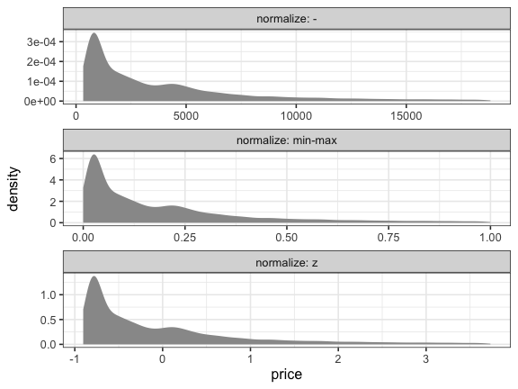
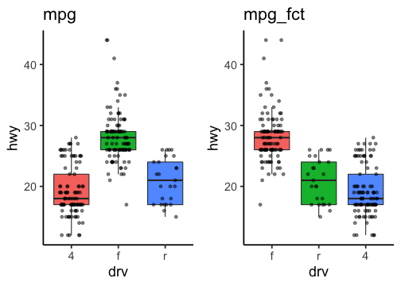
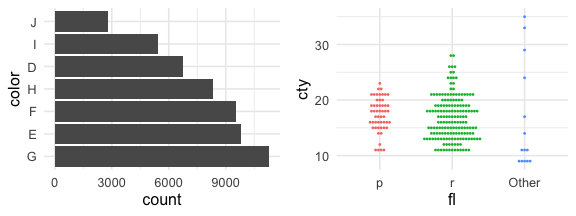
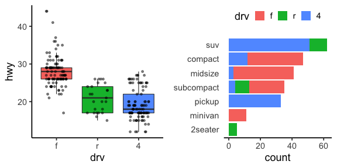

Rによるデータ前処理実習2021
(Graduate School of Life Sciences, Tohoku University)
- 入門1: 前処理とは。Rを使うメリット。Rの基本。
- 入門2: データ可視化の重要性と方法。
- データ構造の処理1: 抽出、集約など。
- データ構造の処理2: 結合、変形など。
- データ内容の処理: 数値、文字列、日時など。
- 実践: 現実の問題に対処してみる。
前回までのまとめ
✅ Rの基礎
- 調べ方さえわかれば、全部覚えなくても大丈夫
- エラーは日常茶飯事。落ち着いて読み取ろう
- まずRスクリプトに書いてから、コンソールで実行
- 便利なパッケージを使おう
✅ データ解析全体の流れ。可視化だいじ
✅ 一貫性のある文法で合理的に描けるggplot2
✅ 使える整然データにするための前処理がたいへん
データ解析のおおまかな流れ
- コンピュータ環境の整備
- データの取得、読み込み
- 探索的データ解析
- 前処理、加工 (地味。意外と重い) 👈 本実習の主題
- 可視化、仮説生成 (派手！だいじ！)
- 統計解析、仮説検証 (みんな勉強したがる)
- 報告、発表

前処理は大きく2つに分けられる


- データ構造を対象とする処理 — 第3, 4回
- 使いたい部分だけ抽出 —
select(),filter() - グループごとに特徴を要約 —
group_by(),summarize() - 何かの順に並べ替え —
arrange() - 異なるテーブルの結合 —
*_join() - 変形: 縦長 ↔ 横広 —
pivot_longer(),pivot_wider()
- 使いたい部分だけ抽出 —
- データ内容を対象とする処理 👈 第5回 本日の話題
- 数値の変換: 対数、正規化
- 外れ値・欠損値への対処
- 型変換: 連続変数、カテゴリカル変数、指示変数、因子、日時
- 文字列処理: 正規表現によるパターンマッチ
tidyverse: データ科学のためのパッケージ群
- 統一的な使い勝手
- シンプルな関数を繋げて使うデザイン

# install.packages("tidyverse")
library(tidyverse) # パッケージ読み込み
── Attaching packages ──────────────────────── tidyverse 1.3.1 ──
✔ ggplot2 3.3.5 ✔ purrr 0.3.4
✔ tibble 3.1.5 ✔ dplyr 1.0.7
✔ tidyr 1.1.4 ✔ stringr 1.4.0
✔ readr 2.0.2 ✔ forcats 0.5.1
── Conflicts ─────────────────────────── tidyverse_conflicts() ──
✖ dplyr::filter() masks stats::filter()
✖ dplyr::lag() masks stats::lag()
たまには更新しよう:
update.packages(ask = "no", type = "binary")
# いちいち確認せずにビルド済み安定版を入れるオプション。無くても。
変数/オブジェクトの型 (復習)
vector: 基本型。一次元の配列。 (👈今回の主役)logical: 論理値 (TRUEorFALSE)numeric: 数値 (整数42Lor 実数3.1416)character: 文字列 ("a string")factor: 因子 (文字列っぽいけど微妙に違う)
array: 多次元配列。vector同様、全要素が同じ型。matrix: 行列 = 二次元の配列。
list: 異なる型でも詰め込める太っ腹ベクトル。data.frame: 同じ長さのベクトルを並べた長方形のテーブル。重要。
tibbleとかtbl_dfと呼ばれる亜種もあるけどほぼ同じ。
vector: 一次元の配列 (復習)
1個の値でもベクトル扱い。
ベクトルの各要素に一気に計算を適用できる。
x = c(1, 2, 9) # 長さ3の数値ベクトル
x + x # 同じ長さ同士の計算
[1] 2 4 18
y = 10 # 長さ1の数値ベクトル
x + y # 長さ3 + 長さ1 = 長さ3 (それぞれ足し算)
[1] 11 12 19
sqrt(x) # square root
[1] 1.000000 1.414214 3.000000
数値: numeric型
普通は倍精度浮動小数点型 double として扱われる:
answer = 42
typeof(answer)
[1] "double"
明示的に変換したり末尾にLを付けることで整数扱いもできる:
typeof(as.integer(answer))
[1] "integer"
whoami = 24601L
typeof(whoami)
[1] "integer"
様々な数学関数
ベクトルを受け取り、それぞれの要素に適用
x = c(1, 2, 3)
sqrt(x)
[1] 1.000000 1.414214 1.732051
log(x)
[1] 0.0000000 0.6931472 1.0986123
log10(x)
[1] 0.0000000 0.3010300 0.4771213
exp(x)
[1] 2.718282 7.389056 20.085537
data.frameは列vectorの集まり
内容を変更する方法はいくつかある。
diamonds の price 列をドルから円に変換する例:
dia = diamonds # 別名コピー
# dollar演算子 $ で指定
dia$price = 113.71 * dia$price
# 名前を [[文字列]] で指定
dia[["price"]] = 113.71 * dia[["price"]]
x = "price"
dia[[x]] = 113.71 * dia[[x]]
# dplyr::mutate with pipe
dia = diamonds %>%
mutate(price = 113.71 * price)
1発ならどれでもいい。流れ作業には mutate() が便利。
正規化 (min-max normalization)
最小=0、最大=1、になるように:
normalized_minmax = diamonds %>%
mutate(price = (price - min(price)) / (max(price) - min(price))) %>%
print()
carat cut color clarity depth table price x y z
<dbl> <ord> <ord> <ord> <dbl> <dbl> <dbl> <dbl> <dbl> <dbl>
1 0.23 Ideal E SI2 61.5 55 0.000000e+00 3.95 3.98 2.43
2 0.21 Premium E SI1 59.8 61 0.000000e+00 3.89 3.84 2.31
3 0.23 Good E VS1 56.9 65 5.406282e-05 4.05 4.07 2.31
4 0.29 Premium I VS2 62.4 58 4.325026e-04 4.20 4.23 2.63
--
53937 0.72 Good D SI1 63.1 55 1.314267e-01 5.69 5.75 3.61
53938 0.70 Very Good D SI1 62.8 60 1.314267e-01 5.66 5.68 3.56
53939 0.86 Premium H SI2 61.0 58 1.314267e-01 6.15 6.12 3.74
53940 0.75 Ideal D SI2 62.2 55 1.314267e-01 5.83 5.87 3.64
外れ値の影響を大きく受けることに注意。
正規化 (z-score normalization)
平均=0、標準偏差=1、になるように:
normalized_z = diamonds %>%
mutate(price = (price - mean(price)) / sd(price)) %>%
print()
carat cut color clarity depth table price x y z
<dbl> <ord> <ord> <ord> <dbl> <dbl> <dbl> <dbl> <dbl> <dbl>
1 0.23 Ideal E SI2 61.5 55 -0.9040868 3.95 3.98 2.43
2 0.21 Premium E SI1 59.8 61 -0.9040868 3.89 3.84 2.31
3 0.23 Good E VS1 56.9 65 -0.9038361 4.05 4.07 2.31
4 0.29 Premium I VS2 62.4 58 -0.9020815 4.20 4.23 2.63
--
53937 0.72 Good D SI1 63.1 55 -0.2947280 5.69 5.75 3.61
53938 0.70 Very Good D SI1 62.8 60 -0.2947280 5.66 5.68 3.56
53939 0.86 Premium H SI2 61.0 58 -0.2947280 6.15 6.12 3.74
53940 0.75 Ideal D SI2 62.2 55 -0.2947280 5.83 5.87 3.64
price = as.vector(scale(price)) でも可能。
scale() はmatrixを返すため as.vector() が必要。
正規化の結果を確認
分布の形は変わらず、範囲が変わる。
z-scoreは正規分布前提。これだけ非対称だと使いにくい。

外れ値の除去
平均値から標準偏差の3倍以上離れているもの($\lvert z \rvert \ge 3$)を取り除く例:
result = diamonds %>%
filter(abs(price - mean(price)) / sd(price) < 3) %>%
print()
carat cut color clarity depth table price x y z
<dbl> <ord> <ord> <ord> <dbl> <dbl> <int> <dbl> <dbl> <dbl>
1 0.23 Ideal E SI2 61.5 55 326 3.95 3.98 2.43
2 0.21 Premium E SI1 59.8 61 326 3.89 3.84 2.31
3 0.23 Good E VS1 56.9 65 327 4.05 4.07 2.31
4 0.29 Premium I VS2 62.4 58 334 4.20 4.23 2.63
--
52731 0.72 Good D SI1 63.1 55 2757 5.69 5.75 3.61
52732 0.70 Very Good D SI1 62.8 60 2757 5.66 5.68 3.56
52733 0.86 Premium H SI2 61.0 58 2757 6.15 6.12 3.74
52734 0.75 Ideal D SI2 62.2 55 2757 5.83 5.87 3.64
唯一の方法ではないし、そもそもやるべきかどうかも要検討
欠損値の除去 tidyr::drop_na()
(指定した列に) NA が含まれてる行を削除する。
df = tibble(x = c(1, 2, NA), y = c("a", NA, "b"))
df %>% drop_na()
x y
<dbl> <chr>
1 1 a
🔰 starwars で身長体重データのある行だけ抽出してみよう
name height mass hair_color skin_color eye_color birth_year sex gender homeworld species films vehicles starships
<chr> <int> <dbl> <chr> <chr> <chr> <dbl> <chr> <chr> <chr> <chr> <list> <list> <list>
1 Luke Skywalker 172 77 blond fair blue 19.0 male masculine Tatooine Human <chr [5]> <chr [2]> <chr [2]>
2 C-3PO 167 75 <NA> gold yellow 112.0 none masculine Tatooine Droid <chr [6]> <chr [0]> <chr [0]>
3 R2-D2 96 32 <NA> white, blue red 33.0 none masculine Naboo Droid <chr [7]> <chr [0]> <chr [0]>
4 Darth Vader 202 136 none white yellow 41.9 male masculine Tatooine Human <chr [4]> <chr [0]> <chr [1]>
--
84 Poe Dameron NA NA brown light brown NA male masculine <NA> Human <chr [1]> <chr [0]> <chr [1]>
85 BB8 NA NA none none black NA none masculine <NA> Droid <chr [1]> <chr [0]> <chr [0]>
86 Captain Phasma NA NA unknown unknown unknown NA <NA> <NA> <NA> <NA> <chr [1]> <chr [0]> <chr [0]>
87 Padmé Amidala 165 45 brown light brown 46.0 female feminine Naboo Human <chr [3]> <chr [0]> <chr [3]>
欠損値の補完 tidyr::replace_na()
欠損値 NA を任意の値で置き換える。
df = tibble(x = c(1, 2, NA), y = c("a", NA, "b"))
df %>% replace_na(list(x = 0, y = "unknown"))
x y
<dbl> <chr>
1 1 a
2 2 unknown
3 0 b
🔰 starwars で髪や目の色が不明の部分を"UNKNOWN"に置換しよう
name height mass hair_color skin_color eye_color birth_year sex gender homeworld species films vehicles starships
<chr> <int> <dbl> <chr> <chr> <chr> <dbl> <chr> <chr> <chr> <chr> <list> <list> <list>
1 Luke Skywalker 172 77 blond fair blue 19.0 male masculine Tatooine Human <chr [5]> <chr [2]> <chr [2]>
2 C-3PO 167 75 <NA> gold yellow 112.0 none masculine Tatooine Droid <chr [6]> <chr [0]> <chr [0]>
3 R2-D2 96 32 <NA> white, blue red 33.0 none masculine Naboo Droid <chr [7]> <chr [0]> <chr [0]>
4 Darth Vader 202 136 none white yellow 41.9 male masculine Tatooine Human <chr [4]> <chr [0]> <chr [1]>
--
84 Poe Dameron NA NA brown light brown NA male masculine <NA> Human <chr [1]> <chr [0]> <chr [1]>
85 BB8 NA NA none none black NA none masculine <NA> Droid <chr [1]> <chr [0]> <chr [0]>
86 Captain Phasma NA NA unknown unknown unknown NA <NA> <NA> <NA> <NA> <chr [1]> <chr [0]> <chr [0]>
87 Padmé Amidala 165 45 brown light brown 46.0 female feminine Naboo Human <chr [3]> <chr [0]> <chr [3]>
欠損値とみなす dplyr::na_if()
特定の値を NA に置き換える:
df %>%
mutate(x = na_if(x, 1), y = na_if(y, "a"))
x y
<dbl> <chr>
1 NA <NA>
2 2 <NA>
3 NA b
🔰 starwars の性別"none"を欠損値にしよう
name height mass hair_color skin_color eye_color birth_year sex gender homeworld species films vehicles starships
<chr> <int> <dbl> <chr> <chr> <chr> <dbl> <chr> <chr> <chr> <chr> <list> <list> <list>
1 Luke Skywalker 172 77 blond fair blue 19.0 male masculine Tatooine Human <chr [5]> <chr [2]> <chr [2]>
2 C-3PO 167 75 <NA> gold yellow 112.0 none masculine Tatooine Droid <chr [6]> <chr [0]> <chr [0]>
3 R2-D2 96 32 <NA> white, blue red 33.0 none masculine Naboo Droid <chr [7]> <chr [0]> <chr [0]>
4 Darth Vader 202 136 none white yellow 41.9 male masculine Tatooine Human <chr [4]> <chr [0]> <chr [1]>
--
84 Poe Dameron NA NA brown light brown NA male masculine <NA> Human <chr [1]> <chr [0]> <chr [1]>
85 BB8 NA NA none none black NA none masculine <NA> Droid <chr [1]> <chr [0]> <chr [0]>
86 Captain Phasma NA NA unknown unknown unknown NA <NA> <NA> <NA> <NA> <chr [1]> <chr [0]> <chr [0]>
87 Padmé Amidala 165 45 brown light brown 46.0 female feminine Naboo Human <chr [3]> <chr [0]> <chr [3]>
欠損値の補完 dplyr::coalesce()
先に指定した列が NA なら次の列の値を採用:
y = c(1, 2, NA, NA, 5)
z = c(NA, NA, 3, 4, 5)
coalesce(y, z)
[1] 1 2 3 4 5
異なる型を混ぜると怒られる:
df = tibble(x = c(1, 2, NA), y = c("a", NA, "b"))
df %>% mutate(z = coalesce(x, y))
Error in `mutate_cols()`:
! Problem with `mutate()` column `z`.
ℹ `z = coalesce(x, y)`.
✖ Can't combine `..1` <double> and `..2` <character>.
Caused by error in `stop_vctrs()`:
! Can't combine `..1` <double> and `..2` <character>.
🔰 starwars で髪色の欠損値を肌色で補おう
条件に応じて値を選択 dplyr::if_else()
普通の if, else とは違ってvector演算なのが特徴:
condition = c(TRUE, TRUE, FALSE)
x = c(1, 2, 3)
y = c(100, 200, 300)
if_else(condition, x, y)
[1] 1 2 300
🔰 starwars で種族がドロイドの行だけ身長を100倍してみよう
name height mass hair_color skin_color eye_color birth_year sex gender homeworld species films vehicles starships
<chr> <int> <dbl> <chr> <chr> <chr> <dbl> <chr> <chr> <chr> <chr> <list> <list> <list>
1 Luke Skywalker 172 77 blond fair blue 19.0 male masculine Tatooine Human <chr [5]> <chr [2]> <chr [2]>
2 C-3PO 167 75 <NA> gold yellow 112.0 none masculine Tatooine Droid <chr [6]> <chr [0]> <chr [0]>
3 R2-D2 96 32 <NA> white, blue red 33.0 none masculine Naboo Droid <chr [7]> <chr [0]> <chr [0]>
4 Darth Vader 202 136 none white yellow 41.9 male masculine Tatooine Human <chr [4]> <chr [0]> <chr [1]>
--
84 Poe Dameron NA NA brown light brown NA male masculine <NA> Human <chr [1]> <chr [0]> <chr [1]>
85 BB8 NA NA none none black NA none masculine <NA> Droid <chr [1]> <chr [0]> <chr [0]>
86 Captain Phasma NA NA unknown unknown unknown NA <NA> <NA> <NA> <NA> <chr [1]> <chr [0]> <chr [0]>
87 Padmé Amidala 165 45 brown light brown 46.0 female feminine Naboo Human <chr [3]> <chr [0]> <chr [3]>
文字列: character型 (string)
ダブルクォートで囲む。シングルクォートも使える。
x = "This is a string"
y = 'If I want to include a "quote" inside a string, I use single quotes'
閉じそびれると変な状態になるので、落ち着いて esc or ctrlc
> "This is a string without a closing quote
+
+
+ HELP I'M STUCK
R備え付けの文字列機能は使いにくい
-
何をやる関数なのか名前から分かりにくい
grep,grepl,regexpr,gregexpr,regexec
sub,gsub,substr,substring -
対象文字列はいくつめに渡す？関数ごとに違う。e.g.,
grep(pattern, x, ...) sub(pattern, replacement, x, ...) substr(x, start, stop) -
欠損値
NAに対する挙動が微妙
stringr — 文字列処理パッケージ

stringr — 文字列処理パッケージ

文字列の基本操作
fruit4 = head(fruit, 4L) %>% print()
[1] "apple" "apricot" "avocado" "banana"
str_length(fruit4) # 長さ
[1] 5 7 7 6
str_sub(fruit4, 2, 4) # 部分抽出
[1] "ppl" "pri" "voc" "ana"
str_c(1:4, " ", fruit4, "!") # 結合
[1] "1 apple!" "2 apricot!" "3 avocado!" "4 banana!"
🔰 fruit や words の一部を抜き出して上記の関数を試してみよう
パターンマッチング
単純な一致だけじゃなく、いろんな条件でマッチングできる:
# aで始まる
str_subset(fruit, "^a")
[1] "apple" "apricot" "avocado"
# rで終わる
str_subset(fruit, "r$")
[1] "bell pepper" "chili pepper" "cucumber" "pear"
# 英数字3-4文字
str_subset(fruit, "^\\w{3,4}$")
[1] "date" "fig" "lime" "nut" "pear" "plum"
この ^ とか $ って何者？
正規表現: 柔軟な検索・置換を可能にするツール
| メタ文字 | 意味 | 演算子 | 意味 | |
|---|---|---|---|---|
\d |
数字 (逆は \D) |
? |
0回か1回 | |
\s |
空白 (逆は \S) |
* |
0回以上繰り返し | |
\w |
英数字 (逆は \W) |
+ |
1回以上繰り返し | |
. |
何でも1文字 | {n,m} |
n回以上m回以下 | |
^ |
行頭 | XXX(?=YYY) |
YYYに先立つXXX | |
$ |
行末 | (?<=YYY)XXX |
YYYに続くXXX |
Rの"普通の文字列"ではバックスラッシュを重ねる必要がある: "^\\d".
正規表現: チートシート (1卓に1枚！)

正規表現: 練習問題
🔰 str_subset(), fruit, words でパターンマッチを身に着けよう
- “o” で始まるもの
- “berry” で終わるもの
- “c” で始まり “r” で終わるもの
- 空白を含むもの、含まないもの
- 数字を含むもの、含まないもの
- そのほか自分で適当に考えてみる
検出 str_detect()
マッチするかどうか TRUE/FALSE を返す。
fruit4 = head(fruit, 4L)
str_detect(fruit4, "^a")
[1] TRUE TRUE TRUE FALSE
🔰 starwars から name 列に空白を含まない行を抽出しよう
name height mass hair_color skin_color eye_color birth_year sex gender homeworld species films vehicles starships
<chr> <int> <dbl> <chr> <chr> <chr> <dbl> <chr> <chr> <chr> <chr> <list> <list> <list>
1 Luke Skywalker 172 77 blond fair blue 19.0 male masculine Tatooine Human <chr [5]> <chr [2]> <chr [2]>
2 C-3PO 167 75 <NA> gold yellow 112.0 none masculine Tatooine Droid <chr [6]> <chr [0]> <chr [0]>
3 R2-D2 96 32 <NA> white, blue red 33.0 none masculine Naboo Droid <chr [7]> <chr [0]> <chr [0]>
4 Darth Vader 202 136 none white yellow 41.9 male masculine Tatooine Human <chr [4]> <chr [0]> <chr [1]>
--
84 Poe Dameron NA NA brown light brown NA male masculine <NA> Human <chr [1]> <chr [0]> <chr [1]>
85 BB8 NA NA none none black NA none masculine <NA> Droid <chr [1]> <chr [0]> <chr [0]>
86 Captain Phasma NA NA unknown unknown unknown NA <NA> <NA> <NA> <NA> <chr [1]> <chr [0]> <chr [0]>
87 Padmé Amidala 165 45 brown light brown 46.0 female feminine Naboo Human <chr [3]> <chr [0]> <chr [3]>
抽出 str_extract()
マッチした部分文字列を取り出す。しなかった要素には NA。
fruit4 = head(fruit, 4L)
str_extract(fruit4, "^a..")
[1] "app" "apr" "avo" NA
🔰 diamonds の clarity 列を数字なしにしてみよう
carat cut color clarity depth table price x y z
<dbl> <ord> <ord> <ord> <dbl> <dbl> <int> <dbl> <dbl> <dbl>
1 0.23 Ideal E SI2 61.5 55 326 3.95 3.98 2.43
2 0.21 Premium E SI1 59.8 61 326 3.89 3.84 2.31
3 0.23 Good E VS1 56.9 65 327 4.05 4.07 2.31
4 0.29 Premium I VS2 62.4 58 334 4.20 4.23 2.63
--
53937 0.72 Good D SI1 63.1 55 2757 5.69 5.75 3.61
53938 0.70 Very Good D SI1 62.8 60 2757 5.66 5.68 3.56
53939 0.86 Premium H SI2 61.0 58 2757 6.15 6.12 3.74
53940 0.75 Ideal D SI2 62.2 55 2757 5.83 5.87 3.64
置換 str_replace(), str_replace_all()
カッコ () で囲んだマッチングは後で参照できる:
fruit4 = head(fruit, 4L)
str_replace(fruit4, "..$", "!!")
[1] "app!!" "apric!!" "avoca!!" "bana!!"
str_replace(fruit4, "(..)$", "_\\1_")
[1] "app_le_" "apric_ot_" "avoca_do_" "bana_na_"
🔰 starwars の name 列の数字を全部ゼロにしてみよう
name height mass hair_color skin_color eye_color birth_year sex gender homeworld species films vehicles starships
<chr> <int> <dbl> <chr> <chr> <chr> <dbl> <chr> <chr> <chr> <chr> <list> <list> <list>
1 Luke Skywalker 172 77 blond fair blue 19.0 male masculine Tatooine Human <chr [5]> <chr [2]> <chr [2]>
2 C-3PO 167 75 <NA> gold yellow 112.0 none masculine Tatooine Droid <chr [6]> <chr [0]> <chr [0]>
3 R2-D2 96 32 <NA> white, blue red 33.0 none masculine Naboo Droid <chr [7]> <chr [0]> <chr [0]>
4 Darth Vader 202 136 none white yellow 41.9 male masculine Tatooine Human <chr [4]> <chr [0]> <chr [1]>
--
84 Poe Dameron NA NA brown light brown NA male masculine <NA> Human <chr [1]> <chr [0]> <chr [1]>
85 BB8 NA NA none none black NA none masculine <NA> Droid <chr [1]> <chr [0]> <chr [0]>
86 Captain Phasma NA NA unknown unknown unknown NA <NA> <NA> <NA> <NA> <chr [1]> <chr [0]> <chr [0]>
87 Padmé Amidala 165 45 brown light brown 46.0 female feminine Naboo Human <chr [3]> <chr [0]> <chr [3]>
dplyr, tidyr の列選択などでも活躍
matches() があれば starts_with()/ends_with() は不要:
diamonds %>% select(matches("^c")) # starts_with("c")
starwars %>% select(matches("s$")) # ends_with("s")
world_bank_pop %>%
pivot_longer(matches("^\\d+$"), names_to = "year")
See selection helpers for more details.
形式を変える・整える
fruit4 = head(fruit, 4L)
str_to_upper(fruit4) # 大文字に
[1] "APPLE" "APRICOT" "AVOCADO" "BANANA"
str_pad(fruit4, 8, "left", "_") # 幅を埋めて指定幅に
[1] "___apple" "_apricot" "_avocado" "__banana"
stringi パッケージはさらに多機能
stringi::stri_trans_nfkc("ｶﾀｶﾅ") # 半角カナを全角に
[1] "カタカナ"
🔰 starwars の name 列を全部小文字にしてみよう
文字列から別の型に

これはstringrではなくreadrの担当:
parse_number(c("p = 0.02 *", "N_A = 6e23"))
[1] 2e-02 6e+23
parse_double(c("0.02", "6e+23"))
[1] 2e-02 6e+23
parse_logical(c("1", "true", "0", "false"))
[1] TRUE TRUE FALSE FALSE
parse_date("2020-06-03")
[1] "2020-06-03"
6e+23 は $6 \times 10 ^ {23}$ のプログラミング的表現。
$6e^{23}$ ではない。
因子型 factor
カテゴリカル変数(質的変数)を扱うための型。文字列っぽいけど実体は整数。
month_levels = c( # 取りうる値
"Jan", "Feb", "Mar", "Apr", "May", "Jun",
"Jul", "Aug", "Sep", "Oct", "Nov", "Dec"
)
x1 = c("Dec", "Apr", "Jan", "Mar") # ただの文字列vector
y1 = factor(x1, levels = month_levels) # 因子型に変換
print(y1)
[1] Dec Apr Jan Mar
Levels: Jan Feb Mar Apr May Jun Jul Aug Sep Oct Nov Dec
as.integer(y1) # 整数型に変換可能
[1] 12 4 1 3
🔰 iris に含まれる因子型を確認しよう: str(iris)
因子型 factor: 文字列との違い1
取りうる値 (levels) が既知。
typoなどによりlevels外になると NA 扱い。
x2 = c("Dec", "Apr", "Jam", "Mar")
factor(x2, levels = month_levels)
[1] Dec Apr <NA> Mar
Levels: Jan Feb Mar Apr May Jun Jul Aug Sep Oct Nov Dec
元の文字列vectorに全てのlevelsが含まれてるなら簡単に変換可能:
as.factor(starwars[["gender"]])
[1] masculine masculine masculine masculine feminine masculine feminine masculine masculine masculine masculine masculine masculine masculine masculine masculine masculine masculine masculine masculine masculine masculine masculine masculine masculine masculine feminine masculine masculine masculine masculine masculine masculine masculine masculine masculine <NA> masculine masculine <NA> feminine masculine masculine feminine masculine masculine masculine masculine masculine masculine masculine feminine masculine masculine masculine masculine masculine feminine masculine masculine feminine feminine feminine masculine masculine masculine feminine masculine masculine feminine feminine masculine feminine masculine masculine feminine masculine masculine masculine <NA> masculine masculine feminine masculine masculine <NA> feminine
Levels: feminine masculine
因子型 factor: 文字列との違い2
アルファベット順じゃない順序がある:
x1 = c("Dec", "Apr", "Jan", "Mar")
sort(x1) # 文字列としてソートするとアルファベット順
[1] "Apr" "Dec" "Jan" "Mar"
y1 = factor(x1, levels = month_levels)
sort(y1) # 因子としてソートするとlevels順
[1] Jan Mar Apr Dec
Levels: Jan Feb Mar Apr May Jun Jul Aug Sep Oct Nov Dec
因子型 factor: 順序の情報は作図で生きる
文字列だと勝手にアルファベット順。因子型なら任意指定可能:
mpg_fct = mpg %>%
mutate(drv = factor(drv, levels = c("f", "r", "4")))

順序つき因子型 ordered
大小の比較ができる。
x1 = c("Dec", "Apr", "Jan", "Mar")
y3 = factor(x1, levels = month_levels, ordered = TRUE)
class(y3)
[1] "ordered" "factor"
print(y3)
[1] Dec Apr Jan Mar
Levels: Jan < Feb < Mar < Apr < May < Jun < Jul < Aug < Sep < Oct < Nov < Dec
y3 < "Sep"
[1] FALSE TRUE TRUE TRUE
🔰 diamonds に含まれるordered型を確認しよう: str(diamonds)
🔰 cut がPremium以上の行だけ抜き出す、とか。
tidyverse の因子型担当は forcats

fct_relevel(): 手動で順序設定fct_reorder(): 別の変数に応じて順序を並べ替えfct_infreq(): 頻度に応じて順序を並べ替えfct_lump(): 少なすぎるカテゴリを"その他"としてまとめる
diamonds_fct = diamonds %>%
mutate(color = fct_infreq(color))
mpg_fct = mpg %>%
mutate(fl = fct_lump(fl, n = 2))

factorで順序を変えて作図する練習
🔰 mpg で次のような図を描いてみよう

指示変数(ダミー変数)に変換
イチゼロの値を持たせて横広に変形するのと等価。
iris %>% rowid_to_column() %>%
mutate(value = 1L) %>%
pivot_wider(names_from = Species,
values_from = value, values_fill = 0L)
rowid Sepal.Length Sepal.Width Petal.Length Petal.Width setosa versicolor virginica
<int> <dbl> <dbl> <dbl> <dbl> <int> <int> <int>
1 1 5.1 3.5 1.4 0.2 1 0 0
2 2 4.9 3.0 1.4 0.2 1 0 0
3 3 4.7 3.2 1.3 0.2 1 0 0
4 4 4.6 3.1 1.5 0.2 1 0 0
--
147 147 6.3 2.5 5.0 1.9 0 0 1
148 148 6.5 3.0 5.2 2.0 0 0 1
149 149 6.2 3.4 5.4 2.3 0 0 1
150 150 5.9 3.0 5.1 1.8 0 0 1
🔰 これを元の iris に戻してみよう
日時型: POSIXct, POSIXlt
- POSIXct: エポックからの経過秒数。比較や差分などを取りやすい。
- POSIXlt: list(秒, 分, 時, 日, 月, 年, …)。単位ごとに抜き出しやすい。
now = "2021-10-16 14:00:00"
ct = as.POSIXct(now)
unclass(ct)
[1] 1634360400
attr(,"tzone")
[1] ""
lt = as.POSIXlt(now)
unclass(lt) %>% as_tibble()
sec min hour mday mon year wday yday isdst zone gmtoff
<dbl> <int> <int> <int> <int> <int> <int> <int> <int> <chr> <int>
1 0 0 14 16 9 121 6 288 0 JST NA
素のRでも扱えるけど lubridate パッケージを使うともっと楽に。
lubridate — 日時型処理パッケージ

日時型への変換:
ymd(c("20201017", "2020-10-17", "20/10/17"))
[1] "2020-10-17" "2020-10-17" "2020-10-17"
日時型から単位ごとに値を取得:
today = ymd(20201017)
month(today)
[1] 10
wday(today, label = TRUE)
[1] Sat
Levels: Sun < Mon < Tue < Wed < Thu < Fri < Sat
🔰 公式ドキュメントなどを見ていろいろな変換・抽出を試してみよう
データ内容を対象とする処理 | まとめ
- 正規化・欠損値処理は目的に応じて検討
- vectorには型がある: 文字列、数値、因子、日時、etc.
- 文字列を扱うには stringr
- 正規表現は一度習得すれば超強力
- 因子を扱うには forcats
- 知っておくとたまに便利。苦手なら全部文字列にしてもいい。
- 日時を扱うには lubridate
各パッケージのチートシート.pdfを手元に持っておくと便利。
前処理に必要な道具はだいたい揃った
- データ構造を対象とする処理 — 第3, 4回
- 使いたい部分だけ抽出 —
select(),filter() - グループごとに特徴を要約 —
group_by(),summarize() - 何かの順に並べ替え —
arrange() - 異なるテーブルの結合 —
*_join() - 変形: 縦長 ↔ 横広 —
pivot_longer(),pivot_wider()
- 使いたい部分だけ抽出 —
- データ内容を対象とする処理 — 👈 第5回 本日の話題
- 数値の変換: 対数、正規化
- 外れ値・欠損値への対処
- 型変換: 連続変数、カテゴリカル変数、指示変数、因子、日時
- 文字列処理: 正規表現によるパターンマッチ
統計解析の一歩手前までなら行ける
- コンピュータ環境の整備
- データの取得、読み込み
- 探索的データ解析
- 前処理、加工 (地味。意外と重い) 👈 本実習の主題
- 可視化、仮説生成 (派手！だいじ！)
- 統計解析、仮説検証 (みんな勉強したがる)
- 報告、発表
Reference
- R for Data Science — Hadley Wickham and Garrett Grolemund
- https://r4ds.had.co.nz/, Paperback, 日本語版書籍
前処理大全 — 本橋智光
RユーザのためのRStudio[実践]入門 (宇宙船本) — 松村ら
- Official documents:
- tidyverse, dplyr, tidyr, stringr, forcats, lubridate
- Older versions
- 「Rにやらせて楽しよう — データの可視化と下ごしらえ」 岩嵜航 2018
- 「Rを用いたデータ解析の基礎と応用」石川由希 2019 名古屋大学
- 「Rによるデータ前処理実習」 岩嵜航 2020 東京医科歯科大
- 「Rを用いたデータ解析の基礎と応用」 石川由希 2021 名古屋大学